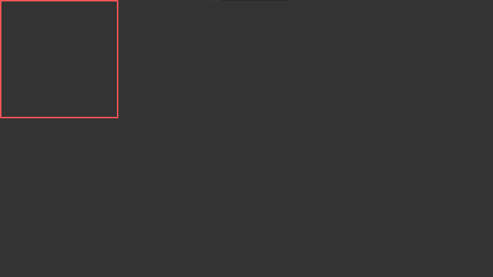
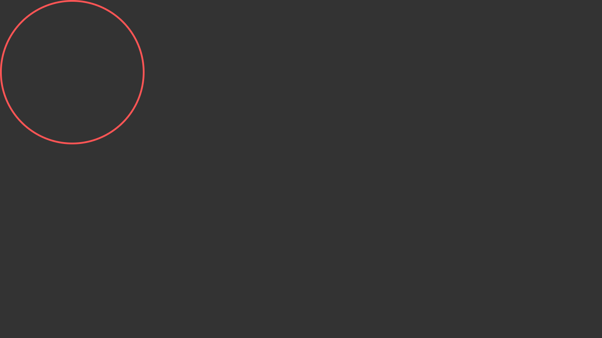
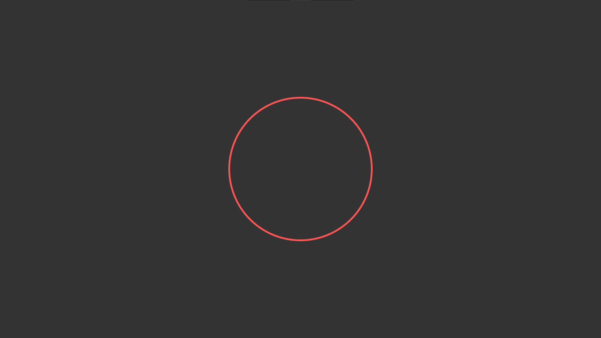
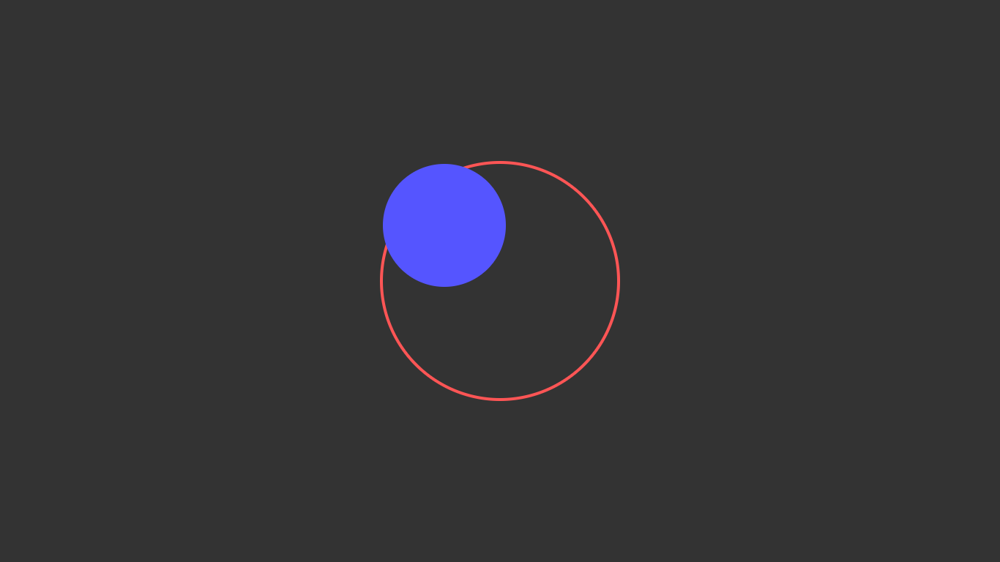
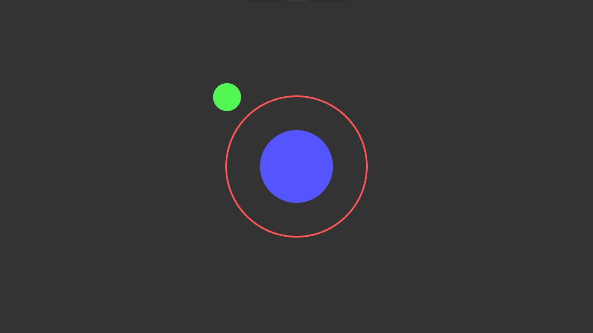
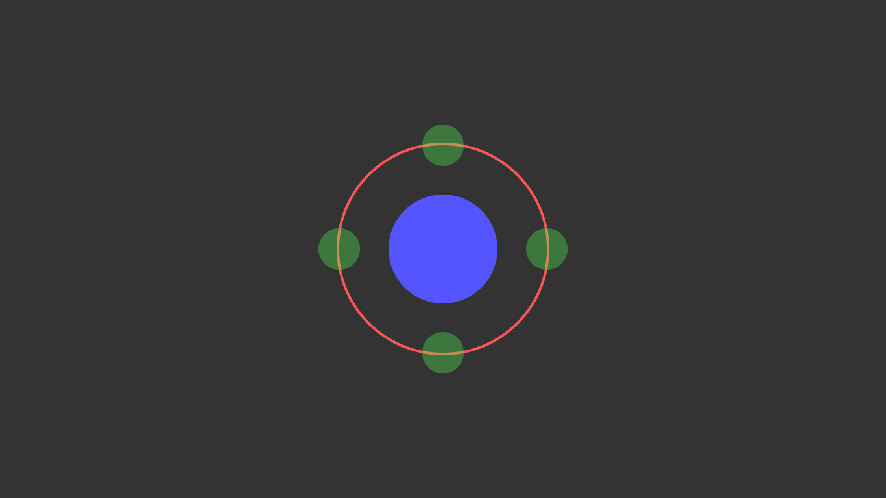

Vamos começar criando nossos círculos, que não passam de um bando de divs
Dentro da tag <body> adicionamos a primeira div, vamos dar a essa div uma classe chamada de círculo externo, dentro dessa tag vamos adicionar uma outra div: circuloInterno
Quando me foi apresentada a sugestão de fazer vários círculos circundarem um ponto específico, imaginei que seria algo extremamente difícil, requerendo o uso de Javascript para calcular o ângulo, empregando senos e cossenos, tal como fiz em meu projeto de Pêndulo Rítmico, que levou mais de 5 horas para ser concluído. Ao chegar em casa para implementar a ideia que havia concebido inicialmente, comecei imediatamente a declarar todas as variáveis necessárias, pressupondo que levaria algumas horas para finalizar o projeto. No meio das minhas declarações, recordei-me de uma propriedade no CSS chamada "transform", amplamente utilizada para alterar um elemento HTML. Por que ela é tão especial? Porque há um argumento denominado "rotate" e adivinhe só? Ele rotaciona! Abaixo está a minha implementação de como funciona e você conhece o ditado. "Se funciona, funciona"
Vamos começar criando nossos círculos, que não passam de um bando de divs
Dentro da tag <body> adicionamos a primeira div, vamos dar a essa div uma classe chamada de círculo externo, dentro dessa tag vamos adicionar uma outra div: circuloInterno
Nesse pode parecer estranho porque nada parece acontecer. O problema é que é necessário um tamanho para nossas divs então vamos 'linkar' o nosso arquivo de estilos na tag head para começar a estilizar nossos elementos. Enquanto estamos no head vamos adicionar um título legal.
No nosso arquivo css que linkamos com o nome de style.css vamos adicionar alguns estilos básicos
Perfeito! esse é o resultado por enquanto
Tá. . . Isso não é bem um circulo, graças ao css podemos resolver isso falando que ele deve ter uma borda arredondada:
O resultado:
Bom agora temos um circulo de verdade mas eu adoraria que ele estivesse centralizado, considerando as milhares de formas possíveis de fazer isso eu escolhi essa aqui:
Perfeito! Fazendo com que o body tenha um display grid. Podemos fazer com ele coloque todo seu conteúdo no centro horizontalmente, e adicionando uma altura: height, podemos fazer com que ele centralize verticalmente também!
Perceba que eu também coloquei o circuloExterno para ter uma posição relativa, isso vai ser mais útil depois
Vamos adicionar também o circulo interno
Hmm. Parece que ele não está centralizado como queremos, agora a gente quer que ele seja centralizado relativo com o circuloExterno. Bom é por isso que colocamos position relativo, como o circuloInterno é filho direto do circuloExterno temos um jeito bem fácil de resolver esse problema
Ótimo Círculos centralizados
Vamos agora adicionar outros círculos em volta da borda e para facilitar vamos adicionar algumas classes
Agora vamos adicionar os estilos
Eu sei que parece muita coisa, mas nesse ponto estamos apenas reutilizando oque já vimos antes, então tecnicamente nada de mais, como todos os círculos tem posições diferentes vamos modifica-los separadamente
Vamos posiciona-los agora:
Como todos os círculos colocados a única coisa q falta é a animação de fato, vamos usar keyframes e rotate
Pronto! Agora a div: 'circulosPequenos' rotaciona de 0º graus até 360º. Fique livre para mudar o tempo que a animação leva para completar uma volta inteira ou estilizar o restante e adicioná-lo em seu projeto,eu posso ver vários casos onde talvez você adicione isso, abaixo está alguns exemplos como uma roda de redes sociais ou slá de seu jeito isso.
Resultado Final Exemplo